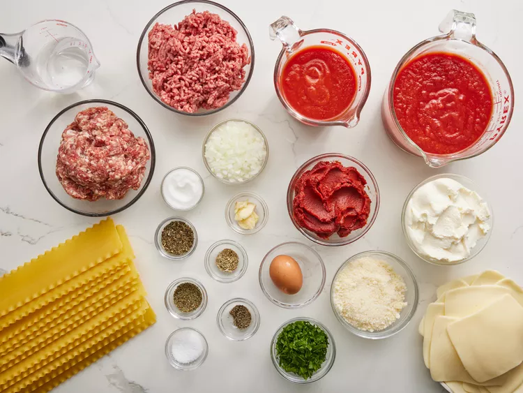
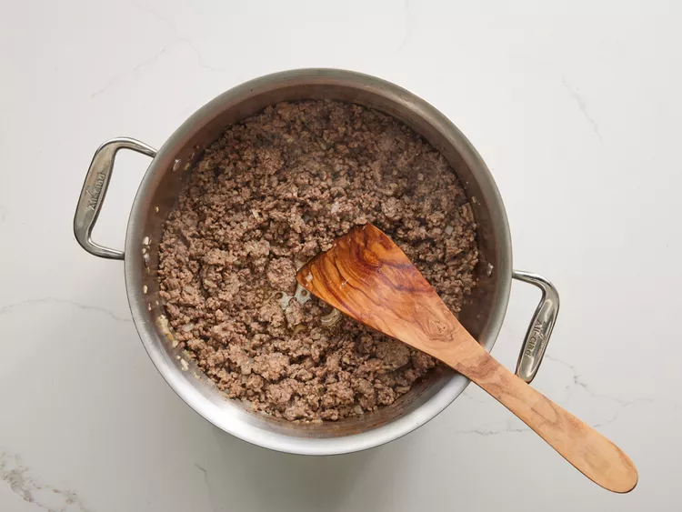
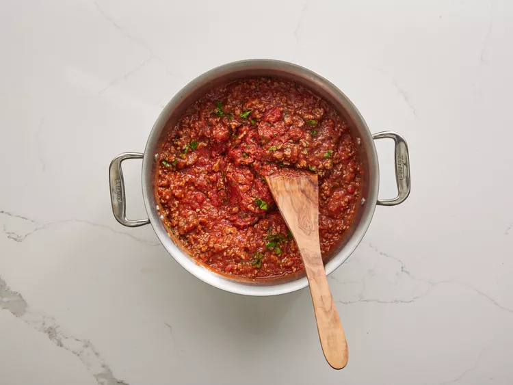
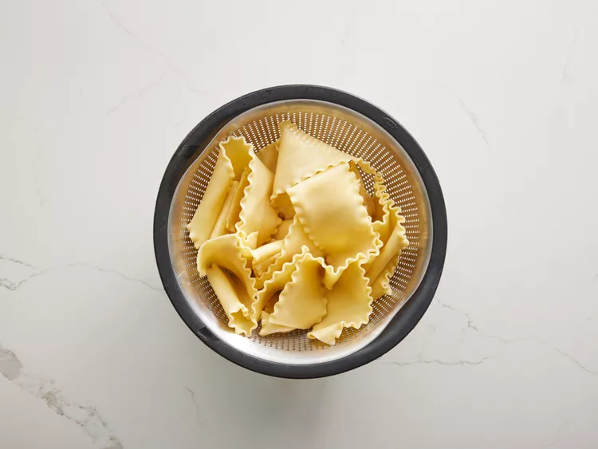
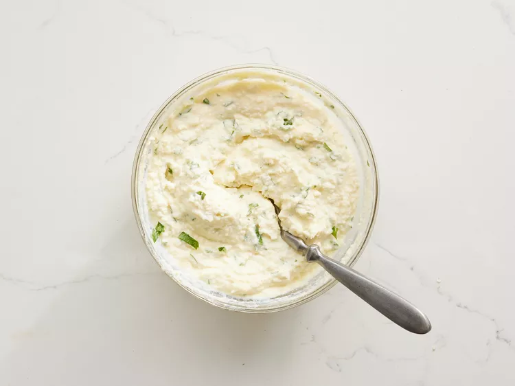
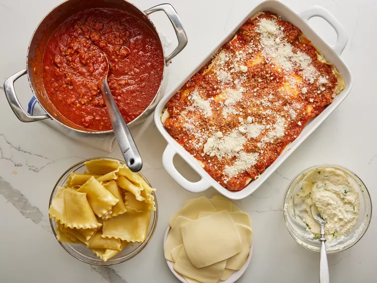
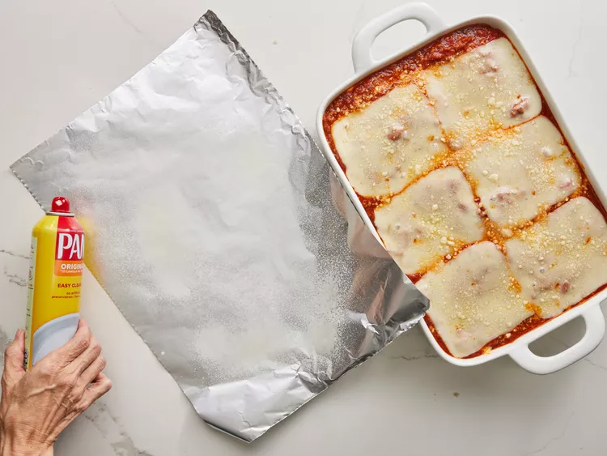
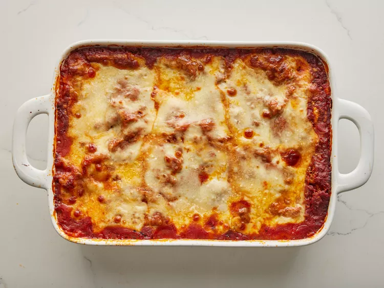

Gather all your ingredients.
Photo by Dotdash Meredith Food Studios
Cook sausage, ground beef, onion, and garlic in a Dutch oven over medium heat until well browned.
Photo by Dotdash Meredith Food Studios
Stir in crushed tomatoes, tomato sauce, tomato paste, and water. Season with sugar, 2 tablespoons parsley, basil, 1 teaspoon salt, Italian seasoning, fennel seeds, and pepper. Simmer, covered, for about 11⁄2 hours, stirring occasionally.
Photo by Dotdash Meredith Food Studios
Bring a large pot of lightly salted water to a boil. Cook lasagna noodles in boiling water for 8 to 10 minutes. Drain noodles, and rinse with cold water.
Photo by Dotdash Meredith Food Studios
In a mixing bowl, combine ricotta cheese with egg, remaining 2 tablespoons parsley, and 1⁄2 teaspoon salt.
Photo by Dotdash Meredith Food Studios
Preheat the oven to 375 degrees F (190 degrees C).
To assemble, spread 11⁄2 cups of meat sauce in the bottom of a 9x13-inch baking dish. Arrange 6 noodles lengthwise over meat sauce, overlapping slightly. Spread with 1⁄2 of the ricotta cheese mixture. Top with 1⁄3 of the mozzarella cheese slices. Spoon 11⁄2 cups meat sauce over mozzarella, and sprinkle with 1⁄4 cup Parmesan cheese.
Photo by Dotdash Meredith Food Studios
Repeat layers, and top with remaining mozzarella and Parmesan cheese. Cover with foil: to prevent sticking, either spray foil with cooking spray or make sure the foil does not touch the cheese.
Photo by Dotdash Meredith Food Studios
Bake in the preheated oven for 25 minutes. Remove the foil and bake for an additional 25 minutes.
Photo by Dotdash Meredith Food Studios
Rest lasagna for 15 minutes before serving.

Photo by Dotdash Meredith Food Studios